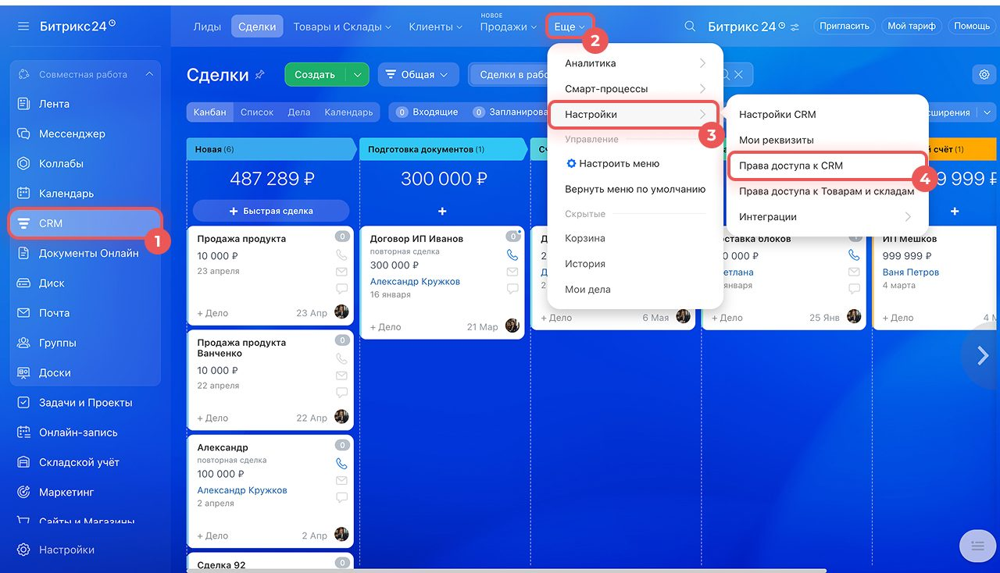
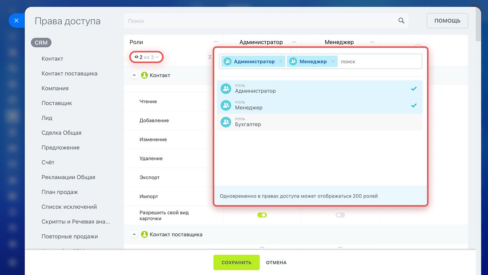
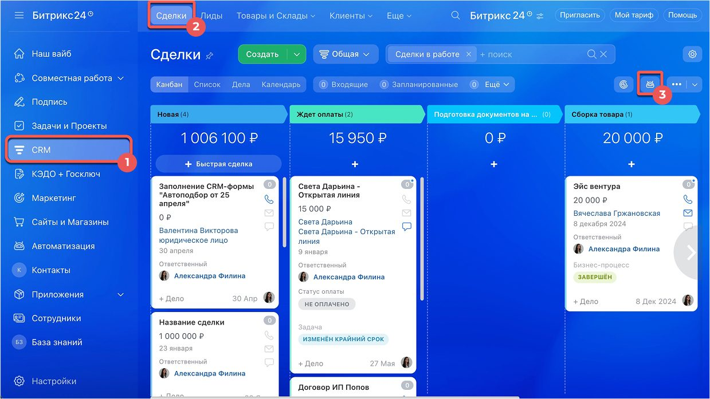
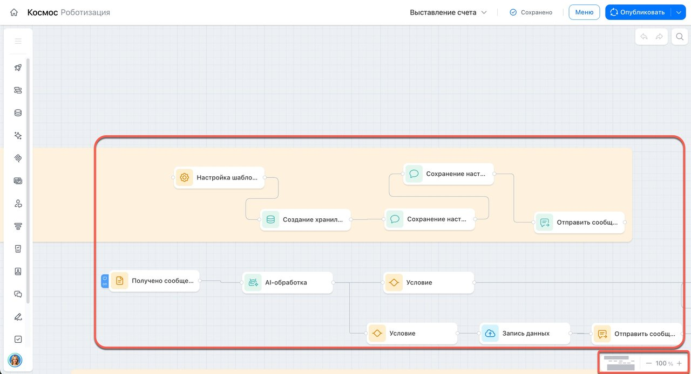

Настройка функционала Битрикс24: как большой конструктор становится вашей системой
Битрикс24 — это не одна программа, а очень широкий набор инструментов, который к тому же постоянно растёт: то, чего не было год назад, уже работает сегодня. Чтобы это стало рабочей системой, а не набором разрозненных разделов, функционал нужно настроить под конкретную компанию — её процессы, роли и правила. Разобраться в этом самостоятельно и увидеть на пару шагов вперёд компании обычно сложно. Для этого и нужен партнёр, который занимается этим каждый день.
Битрикс24 — это конструктор, а не готовая коробка с одной инструкцией
В Битрикс24 есть CRM, задачи и проекты, бизнес-процессы, документы, склад, сайты, телефония, почта, аналитика — и это далеко не полный список. Каждый из этих разделов, в свою очередь, устроен гибко: одни и те же лиды и сделки можно вести по совершенно разным правилам в зависимости от того, как устроена продажа в конкретной компании.
Продукт при этом не стоит на месте: у Битрикс24 регулярно выходят обновления, появляются новые инструменты и переработанные версии старых — то, что ещё недавно приходилось делать вручную или через сторонние приложения, со временем становится встроенной функцией. С одной стороны, это хорошо — возможностей для решения задач бизнеса становится больше. С другой — самой компании уследить за всем этим и понять, что из этого нужно именно ей, объективно сложно: это не основная работа собственника или руководителя отдела.
Именно поэтому рядом с продуктом существуют партнёры вроде нас — мы в первую очередь специалисты в самом Битрикс24 и в автоматизации процессов, которые с ним работают каждый день и видят, какие инструменты для чего подходят.
Сначала бизнес-анализ или сразу настройка — зависит от задачи
Не любая настройка требует предварительного разбора процессов. Иногда задача изначально понятна и локальна, а иногда за простым пожеланием «сделать удобнее» скрывается процесс, который сперва нужно распутать.
Когда нужен бизнес-анализ
Если речь идёт о том, как в принципе должна быть выстроена работа — воронка продаж, согласование договоров, движение заявки между отделами, — сначала стоит разобрать процесс и договориться о нём с командой. Иначе настройка автоматизирует то, что каждый понимает по-своему.
Когда можно настраивать сразу
Если задача конкретная и техническая — добавить поле в карточку сделки, настроить робота на определённой стадии, открыть доступ новому сотруднику, подключить дополнительный канал в CRM, — разбор процесса с нуля не нужен: мы берём задачу и реализуем её.
Три опоры, на которых держится настроенный Битрикс24
При всём многообразии инструментов, настройка почти всегда крутится вокруг трёх вещей: кто и что может делать в системе, что система делает сама, и как процессы компании ложатся на структуру CRM.
Права доступа и роли — кто что видит и может менять
В Битрикс24 можно точно определить, кто из сотрудников какие сделки, лиды и разделы видит, а главное — что именно с ними может делать: только просматривать, редактировать, удалять или экспортировать данные. Права настраиваются не персонально на каждого человека, а через роли — их можно один раз описать и назначать целым отделам.

По умолчанию в системе уже есть роли «Администратор» и «Менеджер», но их можно скопировать, отредактировать под себя или создать новые — например, отдельную роль для бухгалтерии с доступом только на просмотр сделок и без права их редактировать.

Автоматизация — то, что система делает без участия сотрудника
Роботы и триггеры — это правила вида «если случилось одно, сделай другое»: пришла новая сделка на определённую стадию — назначь ответственного, поставь задачу, отправь уведомление в отдел. Настраиваются они один раз в конкретной воронке продаж, а дальше срабатывают сами.

Для более длинных сценариев — например, согласования договора несколькими сотрудниками по очереди, с ветвлениями в зависимости от суммы или отдела, — используется конструктор бизнес-процессов. Это визуальная схема из блоков: получить документ, проверить условие, отправить на согласование, уведомить о результате.

Структура CRM — поля, воронки и стадии под ваш путь клиента
Название и состав стадий сделки, поля в карточке лида, отдельные воронки для разных направлений продаж — всё это тоже часть настройки. Здесь важно не просто добавить побольше полей «на всякий случай», а оставить в карточке ровно то, с чем реально работают сотрудники.
 Отдельные воронки продаж под разные направления, если у них разный путь сделки
Отдельные воронки продаж под разные направления, если у них разный путь сделки- Поля карточки лида и сделки — только те, что реально используются в работе
- Обязательные поля на нужных стадиях — чтобы сделка не двигалась дальше без ключевых данных
- Смарт-процессы для сценариев за пределами классической продажи — например, сервисных заявок или проектов
Мы всегда на стороне клиента и в одной команде с ним
Чтобы правильно настроить или внедрить Битрикс24, недостаточно одной технической экспертизы — нужно единое видение того, что должно получиться на выходе. У каждого собственника свой бизнес, и это его отражение: каждый строит свои процессы исходя из своего понимания, как должно быть. Наша задача — не навязать типовую схему, а помочь реализовать именно это видение правильно и эффективно, опираясь на то, как устроен продукт.
«Мы — специалисты в продукте и в автоматизации, а не в чужом бизнесе. Поэтому мы всегда играем на стороне клиента: разбираемся в его логике, предлагаем варианты и вместе выбираем, как будет правильно именно для него — а не «как у всех»». Команда «АйТи Аналитикс»
Для нас это основная работа, для клиента — работа после работы
Настройка и внедрение Битрикс24 — это то, чем наша команда занимается каждый день. Для клиента это, как правило, дополнительная задача поверх текущей операционной работы: нужно отвечать на вопросы, участвовать в обсуждении процесса, проверять результат, обучать сотрудников. Это стоит учитывать заранее и выделять на это ресурс — время руководителя и ключевых сотрудников, которые знают процесс изнутри.
Чем активнее команда клиента участвует на своей стороне — рассказывает, как есть на самом деле, пробует настроенный функционал, даёт обратную связь, — тем точнее система в итоге отражает реальную работу компании, а не чьё-то абстрактное представление о ней.
Как это выглядит в жизни
Оптовая компания: разные права для отделов
Менеджеры по продажам, кладовщики и бухгалтерия работали в одном Битрикс24, но видели всё подряд — включая чужие сделки и суммы, которые им были не нужны. Настроили роли под каждый отдел: менеджер видит и меняет только свои сделки, кладовщик работает со складом, бухгалтерия — с документами и только на просмотр.
Сервисная компания: напоминания вместо забытых заявок
Заявки клиентов иногда «зависали» на одной стадии, потому что ответственный сотрудник просто забывал про них в потоке других задач. Настроили роботов: если сделка находится на стадии дольше суток без движения, ответственному и его руководителю приходит уведомление.
Производственная компания: согласование через бизнес-процесс
Согласование договоров шло по цепочке в мессенджере и на словах — было не всегда понятно, на ком сейчас документ и почему он завис. Собрали бизнес-процесс: документ последовательно уходит нужным согласующим, а на любом этапе видно, кто уже посмотрел, а кто ещё нет.
Из чего складывается настройка функционала
1. Разбираемся с задачей
Смотрим, что нужно компании: разобрать процесс через бизнес-анализ или сразу реализовать конкретную техническую задачу.
2. Подбираем инструменты Битрикс24
Из всего многообразия функционала выбираем то, что решает именно эту задачу — без лишних разделов и настроек «про запас».
3. Настраиваем и показываем результат
Донастраиваем права доступа, автоматизацию и структуру CRM, а затем вместе с командой клиента проверяем, что всё работает так, как задумано.
4. Обучаем сотрудников
Показываем, как пользоваться новым функционалом на реальных примерах — без этого даже правильно настроенная система будет простаивать.
5. Сопровождаем дальше
Битрикс24 развивается, а вместе с ним меняются и процессы компании — донастраиваем функционал по мере того, как появляются новые задачи.
О чём стоит знать до начала настройки
- Не обязательно включать весь функционал сразу — гораздо полезнее настроить то, что реально нужно, и дальше расширять по мере роста
- Часть возможностей зависит от тарифа Битрикс24 — это стоит уточнять до того, как настройка на них рассчитана
- Функционал продукта регулярно обновляется — то, что решалось обходным путём, со временем может появиться как встроенный инструмент
- Настройка требует участия сотрудников со стороны клиента — без их вовлечённости система будет отражать процесс неточно
Что обычно идёт до и после настройки функционала
Если пока не очевидно, что именно настраивать и с чего начать, — сначала стоит прочитать про бизнес-анализ перед внедрением: он превращает разрозненные пожелания в понятную схему процесса. А если Битрикс24 уже настроен какое-то время назад и непонятно, насколько эффективно он используется сейчас, — об этом статья про аудит работы в Битрикс24.
Хотите настроить Битрикс24 под свои процессы?
Разберёмся, какой функционал нужен именно вашей компании, и настроим права доступа, автоматизацию и структуру CRM так, чтобы система отражала вашу реальную работу.